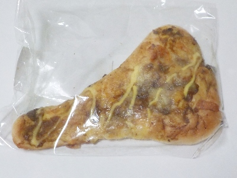
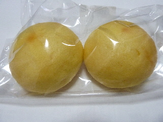
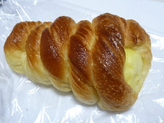

岡野食品のもっちりナン（カレー）。
2024/07/27

大きくてナンの形をしたパンにカレーが付いています。
甘いパンと香ばしいカレーがよく合って美味しかったです。
量が多いので、満足度が高かったです。
松江市宍道町佐々布210-1
2024/07/27

大きくてナンの形をしたパンにカレーが付いています。
甘いパンと香ばしいカレーがよく合って美味しかったです。
量が多いので、満足度が高かったです。
2015/07/27

たまご味のたまごパンです。
たまごボーロのようなマーラカオのような感じがしました。
たまごのマイルドな甘さがいいですね。
2014/07/27

コロネがデニッシュ風で、バターが効いててコクがありました。
バター味があるので、冷やしてもパンが美味しいですね。
カスタードクリームは甘さあっさりでした。